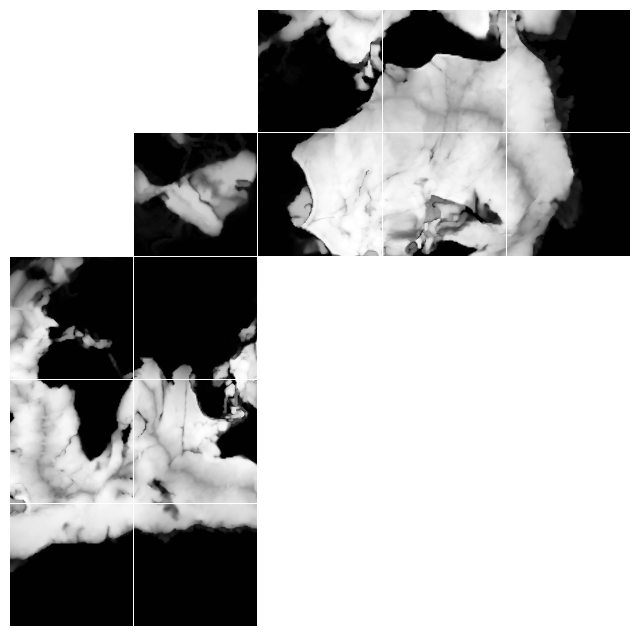
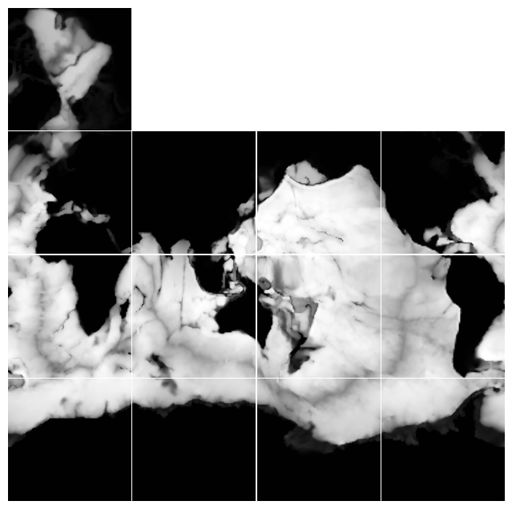
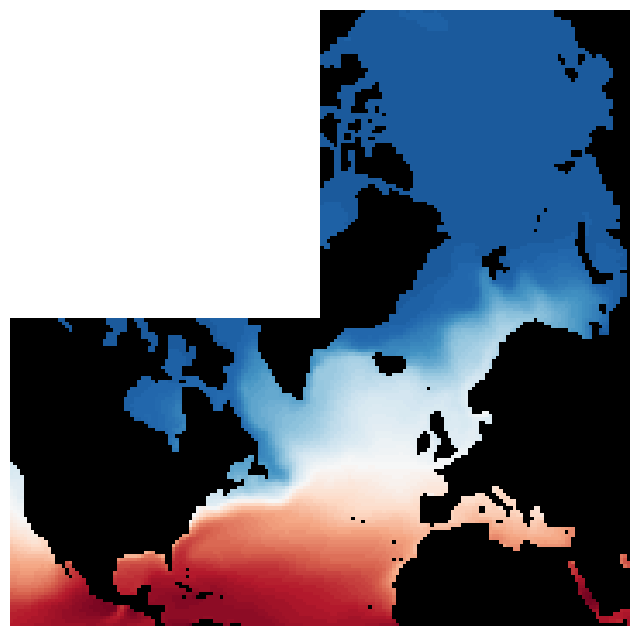

ECCOv4 access via NASA’s OPeNDAP in the Cloud.#
This notebook demonstrates access to ECCOv4 model output. Broad information about the ECCO dataset can be found in the PODAAC website (see here).
Requirements to run this notebook
Have an Earth Data Login account
Have a Bearer Token.
Objectives
Use pydap, Xarray and OPeNDAP to
Discover all OPeNDAP URLs associated with a ECCOv4 data collection. This is a Level 4 dataset defined in the CubedSphere ECCOv4
Authenticate via EDL (token based)
Explore ECCOv4 collection and filter variables, and coordinates
Consolidate Metadata at the collection level
Download/stream a subset of interest
Some variables of focus are
Author: Miguel Jimenez-Urias, ‘25
from pydap.net import create_session
from pydap.client import get_cmr_urls, consolidate_metadata, open_url
import xarray as xr
import datetime as dt
import earthaccess
import matplotlib.pyplot as plt
import numpy as np
import pydap
print("xarray version: ", xr.__version__)
print("pydap version: ", pydap.__version__)
xarray version: 2026.4.0
pydap version: 3.5.10.dev14+g40484efcb
Explore the ECCOv4 Collection#
The entire ECCOv4 simulation is available via NASA’s OPeNDAP service, but it is split into several collections. Each collection is available via Netcdf files. In this tutorial, we will subset Temperature, Salinity at the oceanic surface, for a region of interest: The North Atlantic Ocean. Subsetting the CubedSphere requires specialized code. Since the data is tiled, we will only focus for sake of simplicity, on subsetting the tiles.
For more information about the Ocean Temperature and Salinity, you can checkout this resource https://podaac.jpl.nasa.gov/ECCO?sections=data
ecco_ts_ccid = "C1991543728-POCLOUD" #
time_range = [dt.datetime(2007, 1, 1), dt.datetime(2017, 12, 31)] # One month of data
cmr_urls = get_cmr_urls(ccid=ecco_ts_ccid, time_range=time_range, limit=1000) # you can incread the limit of results
print("################################################ \n We found a total of ", len(cmr_urls), "OPeNDAP URLS!!!\n################################################")
################################################
We found a total of 133 OPeNDAP URLS!!!
################################################
Authenticate#
To hide the abstraction, we will use earthaccess to authenticate, and create a CachedSession to consolidate all metadata pre-download. This approach can result in speed up of 100x when aggregating all URLs into a single Xarray Dataset object.
auth = earthaccess.login(strategy="netrc", persist=True) # you will be promted to add your EDL credentials
# pass Token Authorization to a new Session.
cache_kwargs={'cache_name':'data/ECCOv4'}
my_session = create_session(use_cache=True, session=auth.get_session(), cache_kwargs=cache_kwargs)
my_session.cache.clear()
Explore Variables in collection and filter down to keep only desirable ones#
Here we demonstrate pydap as a exploratory metadata tool. Without downloading any array data, will let us know:
Variables Names, sizes, attributes
Dimensions and Coordinates
Allow us to construct an OPeNDAP Constraint Expression that subsets by variable name
pyds = open_url(cmr_urls[0].replace("https", "dap4"), session=my_session)
pyds.tree()
.OCEAN_TEMPERATURE_SALINITY_mon_mean_2006-12_ECCO_V4r4_native_llc0090.nc
├──XG
├──Zp1
├──Zl
├──YC
├──XC
├──SALT
├──YG
├──XC_bnds
├──Zu
├──THETA
├──Z_bnds
├──YC_bnds
├──time_bnds
├──Z
├──i
├──i_g
├──j
├──j_g
├──k
├──k_l
├──k_p1
├──k_u
├──nb
├──nv
├──tile
└──time
Note
NetCDF files are self describing, and often contain all information necessary to interprete the data. At the collection level (dataset), much of this information is duplicated across each file. With OPeNDAP we can reduce the amount of data processed/download with Constraint Expressions.
We are interested only in Salinity (SALT) and Temperature (THETA), and the necessary extra dimensions/coordinates to work with this arrays. We use PyDAP to help us figure this out
pyds['THETA'].dims
['/time', '/k', '/tile', '/j', '/i']
pyds['SALT'].dims
['/time', '/k', '/tile', '/j', '/i']
pyds['THETA'].coordinates, pyds["SALT"].coordinates
('YC Z XC time', 'YC Z XC time')
Filter by Variable Names (CEs)#
We use the information on dimensions and coordinates, to further filter all possible variables in the dataset. We accomplish this by adding a query parameter of the form:
<base_url> + ?dap4.ce=/var_name1;...
Any variable name included in the query expression, will be processed and all others will be ignored.
Note
You can also construct the full URL with constraint expressions interactively, by selecting manually the variables on the datasets’s Data Request Form and selecting Copy (Raw) Data URL. To go to this page, you need to append a .dmr to each opendap url and insert it into a browser.
dims = pyds['THETA'].dims
Vars = ['/THETA', "/SALT"] + dims
# Below construct Contraint Expression
CE = "?dap4.ce="+(";").join(Vars)
print("Constraint Expression: ", CE)
Constraint Expression: ?dap4.ce=/THETA;/SALT;/time;/k;/tile;/j;/i
DAP4 URLs#
To tell pydap and Xarray which OPeNDAP protocol to use to stream data, we can replace the scheme of each url with dap4. DAP4 is a relatively new protocol (compared to DAP2, and it is widely used across NASA.
ECCO_urls = [url.replace("https", "dap4") + CE for url in cmr_urls]
ECCO_urls[0]
'dap4://opendap.earthdata.nasa.gov/providers/POCLOUD/collections/ECCO%20Ocean%20Temperature%20and%20Salinity%20-%20Monthly%20Mean%20llc90%20Grid%20(Version%204%20Release%204)/granules/OCEAN_TEMPERATURE_SALINITY_mon_mean_2006-12_ECCO_V4r4_native_llc0090?dap4.ce=/THETA;/SALT;/time;/k;/tile;/j;/i'
CubedSphere: Visualizing Depth in the native grid#
Before continuing, we explore the complex topology of the ECCO dataset via the Grid file.
Note
Many of the coordinate variables in the Temperature/Salinity file are also present in the Grid file.
ECCO data is defined on a Cube Sphere – meaning the horizontal grid contains an extra dimension: tile or face. You can inspect the data in its native grid by plotting all horizontal data onto a grid. For that, we look at the Depth variable. This is NOT included in same collection as Temperature. Below we provide the Cloud OPeNDAP URL, which can be queried from the CMR or Earthdata Search.
## Concept collection ID for ECCO grid
grid_ccid = "C2013557893-POCLOUD"
Grid_url = get_cmr_urls(ccid=grid_ccid)[0] # only one element
Grid_url = Grid_url.replace("https", "dap4")
grid_ds = open_url(Grid_url)
grid_ds
<DatasetType with children 'dxC', 'PHrefF', 'XG', 'dyG', 'rA', 'hFacS', 'Zp1', 'Zl', 'rAw', 'dxG', 'maskW', 'YC', 'XC', 'maskS', 'YG', 'hFacC', 'drC', 'drF', 'XC_bnds', 'Zu', 'Z_bnds', 'YC_bnds', 'PHrefC', 'rAs', 'Depth', 'dyC', 'SN', 'rAz', 'maskC', 'CS', 'hFacW', 'Z', 'i', 'i_g', 'j', 'j_g', 'k', 'k_l', 'k_p1', 'k_u', 'nb', 'nv', 'tile'>
Note
The coordinates for THETA and SALT are present in the single file for Grid. And so we will not include them in our workflow until the end
Download a single variable#
With pure PyDAP, slicing an array triggers the download of that array. We illustrate that below
%%time
Depth = grid_ds["Depth"][:].data # <-------- LOADS DATA as in-memory numpy array
CPU times: user 74.3 ms, sys: 11.3 ms, total: 85.6 ms
Wall time: 1.63 s
Depth.shape
(13, 90, 90)
Variable = [Depth[i] for i in range(13)]
clevels = np.linspace(0, 6000, 100)
cMap = 'Greys_r'
fig, axes = plt.subplots(nrows=5, ncols=5, figsize=(8, 8), gridspec_kw={'hspace':0.01, 'wspace':0.01})
AXES = [
axes[4, 0], axes[3, 0], axes[2, 0], axes[4, 1], axes[3, 1], axes[2, 1],
axes[1, 1],
axes[1, 2], axes[1, 3], axes[1, 4], axes[0, 2], axes[0, 3], axes[0, 4],
]
for i in range(len(AXES)):
AXES[i].contourf(Variable[i], clevels, cmap=cMap)
for ax in np.ravel(axes):
ax.axis('off')
plt.setp(ax.get_xticklabels(), visible=False)
plt.setp(ax.get_yticklabels(), visible=False)
plt.show()

Fig. 1. Depth plotted on a horizontal layout. Data on tiles 0-5 follow C-ordering, whereas data on tiles 7-13 follow F-ordering. Data on the arctic cap, is defined on a polar coordinate grid.
Plot with corrected Topology
fig, axes = plt.subplots(nrows=4, ncols=4, figsize=(8, 8), gridspec_kw={'hspace':0.01, 'wspace':0.01})
AXES_NR = [
axes[3, 0], axes[2, 0], axes[1, 0], axes[3, 1], axes[2, 1], axes[1, 1],
]
AXES_CAP = [axes[0, 0]]
AXES_R = [
axes[1, 2], axes[2, 2], axes[3, 2], axes[1, 3], axes[2, 3], axes[3, 3],
]
for i in range(len(AXES_NR)):
AXES_NR[i].contourf(Variable[i], clevels, cmap=cMap)
for i in range(len(AXES_CAP)):
AXES_CAP[i].contourf(np.transpose(Variable[6])[:, ::-1], clevels, cmap=cMap)
for i in range(len(AXES_R)):
AXES_R[i].contourf(np.transpose(Variable[7+i])[::-1, :], clevels, cmap=cMap)
for ax in np.ravel(axes):
ax.axis('off')
plt.setp(ax.get_xticklabels(), visible=False)
plt.setp(ax.get_yticklabels(), visible=False)
plt.show()

Fig. 2. Depth plotted on a horizontal layout that approximates lat-lon display. Data on the arctic cap, however, remains on a polar coordinate grid.
Consolidate Metadata#
Aggregating multiple remote files at the collection level requires persistent internet connection. The pydap backend allows to download and store the metadata required by xarray locally as a sqlite3 database, and this database can be used as session manager (for futher downloads). Creating this databaset can be done once, and reused, version controlled, etc. Reusing this database can cut the time to generate the aggregated dataset view from minutes to seconds.
Persisting metadata for later reuse#
When executing consolidate_metadata below, a sqlite3 database is created in the default directory specified by the cache_name, in the CachedSession. This metadata file can be stored persistently, and version-controlled, to avoid running consolidate metadata everytime.
Note
To persist the metadata database, avoid executing session.cache.clear(). You can also place the .sqlite in a version controlled repository local to your workflow that can track any changes to it. With this, re-executing consolidate_metadata will exit in <1 second.
Warning
After creatng the sqlite database, you can access it across Kernel restarts by simply creating the session as done above, choosing the cache_name that matches the name of the sqlite database. BUT you will may also need to re-execute consolidate_metadata, as in some cases consolidate_metadata creates a special key_fn to reuse the cache associated with certain dimensions across urls. This behavior will go away in a future release.
%%time
consolidate_metadata(ECCO_urls, session=my_session, concat_dim='time')
datacube has dimensions ['i[0:1:89]', 'j[0:1:89]', 'k[0:1:49]', 'tile[0:1:12]'] , and concat dim: `['time']`
CPU times: user 2.87 s, sys: 855 ms, total: 3.73 s
Wall time: 19.5 s
len(my_session.cache.urls())
268
Dataset aggregation via Xarray#
Before creating the aggregated dataset, we know we are interested in:
Surface data (a single element
k=0, wherekis the dimension along the vertical axis).Tiles
2,6, and10, cover the North Atlantic Ocean (see depth plots below).
We want the OPeNDAP server to do the subsetting for us, reducing the amount of data downloaded. As such, we need to define the chunking that will match our server request. See below
A note about chunks#
With OPeNDAP, any download from a granule should be considered as a single chunk, from the perspective of Xarray. The DAP4 protocol does send chunk responses over the web, but these are assembled by pydap in memory as individual numpy arrays. You can see the perspective of Xarray on the remote chunking by passing a chunks={} argument when opening the dataset.
%%time
ds = xr.open_mfdataset(
ECCO_urls,
engine='pydap',
session=my_session,
parallel=True,
combine='nested',
concat_dim='time',
chunks={},
)
ds
CPU times: user 4.09 s, sys: 549 ms, total: 4.64 s
Wall time: 4.73 s
<xarray.Dataset> Size: 6GB
Dimensions: (time: 133, k: 50, tile: 13, j: 90, i: 90)
Coordinates:
* time (time) datetime64[ns] 1kB 2006-12-16T12:00:00 ... 2017-12-16T06:...
* k (k) int32 200B 0 1 2 3 4 5 6 7 8 9 ... 41 42 43 44 45 46 47 48 49
* tile (tile) int32 52B 0 1 2 3 4 5 6 7 8 9 10 11 12
* j (j) int32 360B 0 1 2 3 4 5 6 7 8 9 ... 81 82 83 84 85 86 87 88 89
* i (i) int32 360B 0 1 2 3 4 5 6 7 8 9 ... 81 82 83 84 85 86 87 88 89
Data variables:
SALT (time, k, tile, j, i) float32 3GB dask.array<chunksize=(1, 50, 13, 90, 90), meta=np.ndarray>
THETA (time, k, tile, j, i) float32 3GB dask.array<chunksize=(1, 50, 13, 90, 90), meta=np.ndarray>
Attributes: (12/62)
acknowledgement: This research was carried out by the Jet...
author: Ian Fenty and Ou Wang
cdm_data_type: Grid
comment: Fields provided on the curvilinear lat-l...
Conventions: CF-1.8, ACDD-1.3
coordinates_comment: Note: the global 'coordinates' attribute...
... ...
time_coverage_duration: P1M
time_coverage_end: 2007-01-01T00:00:00
time_coverage_resolution: P1M
time_coverage_start: 2006-12-01T00:00:00
title: ECCO Ocean Temperature and Salinity - Mo...
uuid: f32555f0-4181-11eb-bed0-0cc47a3f47a3Xarray treats the remote data variable as an individual chunk, no matter the size of the OPeNDAP subset#
ds['THETA']
<xarray.DataArray 'THETA' (time: 133, k: 50, tile: 13, j: 90, i: 90)> Size: 3GB
dask.array<concatenate, shape=(133, 50, 13, 90, 90), dtype=float32, chunksize=(1, 50, 13, 90, 90), chunktype=numpy.ndarray>
Coordinates:
* time (time) datetime64[ns] 1kB 2006-12-16T12:00:00 ... 2017-12-16T06:...
* k (k) int32 200B 0 1 2 3 4 5 6 7 8 9 ... 41 42 43 44 45 46 47 48 49
* tile (tile) int32 52B 0 1 2 3 4 5 6 7 8 9 10 11 12
* j (j) int32 360B 0 1 2 3 4 5 6 7 8 9 ... 81 82 83 84 85 86 87 88 89
* i (i) int32 360B 0 1 2 3 4 5 6 7 8 9 ... 81 82 83 84 85 86 87 88 89
Attributes:
long_name: Potential temperature
units: degree_C
coverage_content_type: modelResult
standard_name: sea_water_potential_temperature
comment: Sea water potential temperature is the temperatur...
valid_min: -2.2909388542175293
valid_max: 36.032955169677734
origname: THETA
fullnamepath: /THETA
Maps: ()For Chunk Considerations#
Download performance is a game of Chunk Sizes. For OPeNDAP, this concerns the size of the slice, which is bounded from above by the size of the granule (at the variable level). However, if the chunks are too small, the download will take forever. Too large, and you will download too much data from S3 (assuming this tutorial is being run outside of the region). In that last scenario (data is on S3), egress charges are important, and we find ourselves with the different choices for our approach to download data:
Minimize the amount of data leaving the cloud. This is accompished by the following chunking:
chunks={'k':1, 'tile':1}. However, since we will download 3 tiles per granule, chunking the dataset will multiply by a factor of 3 the amount of request made to the remote OPeNDAP server, only for the data to be assembled by Xarray afterwards, once downloaded locally and before storing.Optimized performance. In this case, this is done by choosing the following chunking:
chunks={'k':1}. It will download all the tiles per granule, and the top level only. All these are easily subsetted by Xarray once data is downloaded. This option also keeps the number of requests to the OPeNDAP server at a minimum.
Warning
Even with the optimized performance approach, this may not be fast. Download speed will depend on internet connection, or data locality. Overall, the number of request to the server will be ~600 in this scenario, all behind some form of authentication.
%%time
ds = xr.open_mfdataset(
ECCO_urls,
engine='pydap',
session=my_session,
parallel=True,
combine='nested',
concat_dim='time',
chunks={'k':1},
)
ds
CPU times: user 3.72 s, sys: 427 ms, total: 4.15 s
Wall time: 4.43 s
<xarray.Dataset> Size: 6GB
Dimensions: (time: 133, k: 50, tile: 13, j: 90, i: 90)
Coordinates:
* time (time) datetime64[ns] 1kB 2006-12-16T12:00:00 ... 2017-12-16T06:...
* k (k) int32 200B 0 1 2 3 4 5 6 7 8 9 ... 41 42 43 44 45 46 47 48 49
* tile (tile) int32 52B 0 1 2 3 4 5 6 7 8 9 10 11 12
* j (j) int32 360B 0 1 2 3 4 5 6 7 8 9 ... 81 82 83 84 85 86 87 88 89
* i (i) int32 360B 0 1 2 3 4 5 6 7 8 9 ... 81 82 83 84 85 86 87 88 89
Data variables:
SALT (time, k, tile, j, i) float32 3GB dask.array<chunksize=(1, 1, 13, 90, 90), meta=np.ndarray>
THETA (time, k, tile, j, i) float32 3GB dask.array<chunksize=(1, 1, 13, 90, 90), meta=np.ndarray>
Attributes: (12/62)
acknowledgement: This research was carried out by the Jet...
author: Ian Fenty and Ou Wang
cdm_data_type: Grid
comment: Fields provided on the curvilinear lat-l...
Conventions: CF-1.8, ACDD-1.3
coordinates_comment: Note: the global 'coordinates' attribute...
... ...
time_coverage_duration: P1M
time_coverage_end: 2007-01-01T00:00:00
time_coverage_resolution: P1M
time_coverage_start: 2006-12-01T00:00:00
title: ECCO Ocean Temperature and Salinity - Mo...
uuid: f32555f0-4181-11eb-bed0-0cc47a3f47a3Include the grid data#
Now we will access the remote Grid file to include some additional grid variables. This new individual dataset will be merged with our temperature/salinity dataset.
Note
We will NOT use the same CachedSession object. Instead, we will initiate a different session object. Note the speed it takes may be similar (same order) as aggregating 100s of urls. This is what consolidate metadata does.
%%time
### create anew session
session = create_session(session=auth.get_session())
### create an individual dataset with only the variables of interest
grid_ds = xr.open_dataset(Grid_url+"?dap4.ce=/Depth;/XC;/YC;/i;/j;/tile", engine='pydap', session=session)
grid_ds
CPU times: user 92.2 ms, sys: 8.5 ms, total: 101 ms
Wall time: 1.71 s
<xarray.Dataset> Size: 1MB
Dimensions: (tile: 13, j: 90, i: 90)
Coordinates:
* tile (tile) int32 52B 0 1 2 3 4 5 6 7 8 9 10 11 12
* j (j) int32 360B 0 1 2 3 4 5 6 7 8 9 ... 81 82 83 84 85 86 87 88 89
* i (i) int32 360B 0 1 2 3 4 5 6 7 8 9 ... 81 82 83 84 85 86 87 88 89
YC (tile, j, i) float32 421kB ...
XC (tile, j, i) float32 421kB ...
Data variables:
Depth (tile, j, i) float32 421kB ...
Attributes: (12/58)
acknowledgement: This research was carried out by the Jet...
author: Ian Fenty and Ou Wang
cdm_data_type: Grid
comment: Fields provided on the curvilinear lat-l...
Conventions: CF-1.8, ACDD-1.3
coordinates_comment: Note: the global 'coordinates' attribute...
... ...
references: ECCO Consortium, Fukumori, I., Wang, O.,...
source: The ECCO V4r4 state estimate was produce...
standard_name_vocabulary: NetCDF Climate and Forecast (CF) Metadat...
summary: This dataset provides geometric paramete...
title: ECCO Geometry Parameters for the Lat-Lon...
uuid: 87ff7d24-86e5-11eb-9c5f-f8f21e2ee3e0#### Combine the two datasets into a single dataset reference
nds = xr.merge([ds, grid_ds])
nds
<xarray.Dataset> Size: 6GB
Dimensions: (time: 133, k: 50, tile: 13, j: 90, i: 90)
Coordinates:
* time (time) datetime64[ns] 1kB 2006-12-16T12:00:00 ... 2017-12-16T06:...
* k (k) int32 200B 0 1 2 3 4 5 6 7 8 9 ... 41 42 43 44 45 46 47 48 49
* tile (tile) int32 52B 0 1 2 3 4 5 6 7 8 9 10 11 12
* j (j) int32 360B 0 1 2 3 4 5 6 7 8 9 ... 81 82 83 84 85 86 87 88 89
* i (i) int32 360B 0 1 2 3 4 5 6 7 8 9 ... 81 82 83 84 85 86 87 88 89
YC (tile, j, i) float32 421kB ...
XC (tile, j, i) float32 421kB ...
Data variables:
SALT (time, k, tile, j, i) float32 3GB dask.array<chunksize=(1, 1, 13, 90, 90), meta=np.ndarray>
THETA (time, k, tile, j, i) float32 3GB dask.array<chunksize=(1, 1, 13, 90, 90), meta=np.ndarray>
Depth (tile, j, i) float32 421kB ...
Attributes: (12/62)
acknowledgement: This research was carried out by the Jet...
author: Ian Fenty and Ou Wang
cdm_data_type: Grid
comment: Fields provided on the curvilinear lat-l...
Conventions: CF-1.8, ACDD-1.3
coordinates_comment: Note: the global 'coordinates' attribute...
... ...
time_coverage_duration: P1M
time_coverage_end: 2007-01-01T00:00:00
time_coverage_resolution: P1M
time_coverage_start: 2006-12-01T00:00:00
title: ECCO Ocean Temperature and Salinity - Mo...
uuid: f32555f0-4181-11eb-bed0-0cc47a3f47a3Stream all surface data with OPeNDAP, subset tiles, and store data locally with Xarray and PyDAP as engine#
%%time
nds.isel(k=0, tile=[2,6,10]).to_netcdf("data/ECCOv4_NA.nc4")
CPU times: user 9.17 s, sys: 1.6 s, total: 10.8 s
Wall time: 34.3 s
Finally, inspect the downloaded data#
mds = xr.open_dataset("data/ECCOv4_NA.nc4")
mds
<xarray.Dataset> Size: 26MB
Dimensions: (time: 133, tile: 3, j: 90, i: 90)
Coordinates:
* time (time) datetime64[ns] 1kB 2006-12-16T12:00:00 ... 2017-12-16T06:...
* tile (tile) int32 12B 2 6 10
* j (j) int32 360B 0 1 2 3 4 5 6 7 8 9 ... 81 82 83 84 85 86 87 88 89
* i (i) int32 360B 0 1 2 3 4 5 6 7 8 9 ... 81 82 83 84 85 86 87 88 89
YC (tile, j, i) float32 97kB ...
XC (tile, j, i) float32 97kB ...
k int32 4B ...
Data variables:
SALT (time, tile, j, i) float32 13MB ...
THETA (time, tile, j, i) float32 13MB ...
Depth (tile, j, i) float32 97kB ...
Attributes: (12/62)
acknowledgement: This research was carried out by the Jet...
author: Ian Fenty and Ou Wang
cdm_data_type: Grid
comment: Fields provided on the curvilinear lat-l...
Conventions: CF-1.8, ACDD-1.3
coordinates_comment: Note: the global 'coordinates' attribute...
... ...
time_coverage_duration: P1M
time_coverage_end: 2007-01-01T00:00:00
time_coverage_resolution: P1M
time_coverage_start: 2006-12-01T00:00:00
title: ECCO Ocean Temperature and Salinity - Mo...
uuid: f32555f0-4181-11eb-bed0-0cc47a3f47a3Variable = [mds['THETA'][0, i, :, :] for i in range(3)]
clevels = np.linspace(-5, 30, 100)
cMap='RdBu_r'
ocean_mask = mds["Depth"]>0
fig, axes = plt.subplots(nrows=2, ncols=2, figsize=(8, 8), gridspec_kw={'hspace':0.001, 'wspace':0.001})
AXES_NR = [
axes[1, 1],
]
AXES_CAP = [axes[0, 1]]
AXES_R = [
axes[1, 0],
]
for i in range(len(AXES_NR)):
ocean_mask.isel(tile=0).plot(ax=AXES_NR[i], cmap="Greys_r", add_colorbar=False)
Variable[0].where(ocean_mask.isel(tile=0)).plot(ax=AXES_NR[i], levels=clevels, cmap=cMap, add_colorbar=False)
for i in range(len(AXES_CAP)):
ocean_mask.isel(tile=1).transpose().plot(ax= AXES_CAP[i], cmap="Greys_r", add_colorbar=False, xincrease=False)
Variable[1].transpose().where(ocean_mask.isel(tile=1)).plot(ax=AXES_CAP[i], levels=clevels, cmap=cMap, add_colorbar=False, xincrease=False)
for i in range(len(AXES_R)):
# AXES_R[i].contourf(Variable[2].transpose()[::-1, :], clevels, cmap=cMap)
ocean_mask.isel(tile=2).transpose().plot(ax= AXES_R[i], cmap="Greys_r", add_colorbar=False, yincrease=False)
Variable[2].transpose().where(ocean_mask.isel(tile=2)).plot(ax=AXES_R[i], levels=clevels, cmap=cMap, add_colorbar=False, yincrease=False)
for ax in np.ravel(axes):
ax.axis('off')
plt.setp(ax.get_xticklabels(), visible=False)
plt.setp(ax.get_yticklabels(), visible=False)
plt.setp(ax.title, visible=False)
plt.show()

Fig. 3. Surface temperature, plotted on a horizontal layout that approximates lat-lon display. Data on the arctic cap, however, remains on a polar coordinate grid.